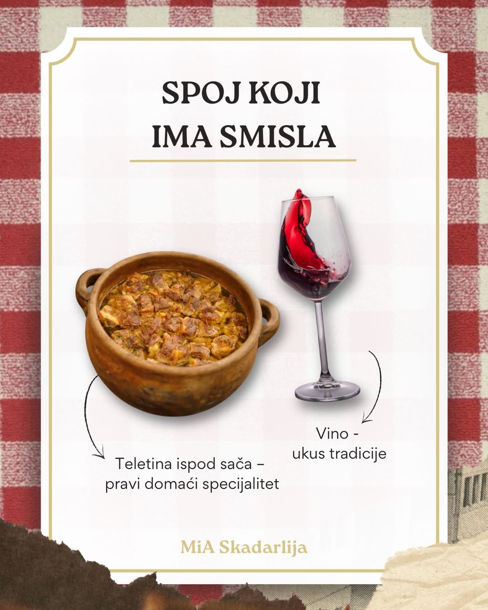

Preporuka
Glavno jelo · Ispod sača
Teletina ispod sača
Pravi domaći specijalitet — meko, sočno meso pripremljeno na tradicionalan način, sa krompirom i pažljivo biranim začinima. Sluša se vatra, a ne sat.
Uz čašu domaćeg crnog vina